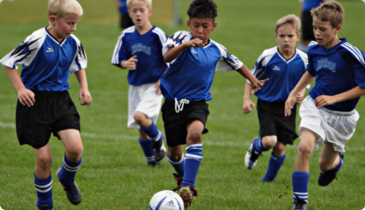
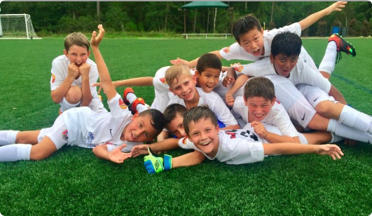

The Grassroots Development League (www.gdlsoccer.com), a Greenfield, LLC company, announced a comprehensive long-term licensing agreement with sports league technology leader, TapIn Mobile Solutions (www.tapinmobilesolutions.com). Through the agreement, the GDL will leverage TapIn’s best of breed end-to-end mobile platform to power all administrative and league operational functions. In addition, TapIn technology will power player development focused coaching education and assessment tools to further promote a player centric developmentally appropriate environment. “We are thrilled to partner with the most comprehensive and dynamic sports technology company in the world to power our leagues” said GDL CEO, Justin Capell. “Their platform’s flexibility and power will enable us to not just run all league operations flawlessly, but it enables coaches to provide real time development focused and relevant feedback to players and families. Players are going to love their personal player cards with development focused “stats”, and parents, coaches and referees are going to love the platform’s ease of use”. TapIn CEO, Steve Schechter, also expressed excitement about the new partnership. “We are thrilled to enter the North American market while partnering with a like minded and forward thinking group at GDL. The GDL is all about development, and they put kids and the game above all. As a technology company with a very heavy focus on social good, we are excited to see the GDL literally change the game for young players in North America”. About TapIn Mobile Solutions: Headquartered in Natick, MA, TapIn Mobile Solutions offers a revolutionary, state-of-the-art mobile and online platform that enables the self-management and organization of sports leagues. Their Enterprise League Platform is the first of its kind, end – to – end solution that handles all aspects of league organization and administration. The platform powers youth national leagues in partnership with football federations in several developing nations in Africa and the Carribean. About Grassroots Development League (GDL): Boston based GDL was founded in 2020 to offer soccer development league programming to boys and girls, competing at the U7 and U8 age groups. Operating a program that brings players from different organizations, as well as varying walks of life, together in an environment which is focussed exclusively on player development, GDL creates a diverse and educationally relevant opportunity for young athletes at a key developmental age. Utilizing advanced technology, GDL delivers coaching education and assessment tools as well as real time development focused player and family feedback.

Today, the Grassroots Development League (www.gdlsoccer.com), a Greenfield, LLC company, announced a comprehensive long-term partnership agreement with social impact soccer brand, Palla Sportswear. Through the agreement, Palla Sportswear will become the official sportswear and equipment provider for all GDL leagues. As part of the deal terms, every newly registered GDL player will receive a Palla ball and a pair of shin guards at no additional charge. In addition, all GDL players, families, coaches, and referees will automatically receive discounted pricing on all Palla products sold through the Palla storefront at www.pallasport.com. “This is an exciting development for us at GDL”, said GDL CEO, Justin Capell. “We wanted to work with a brand that not only produces great soccer products at fair prices, but a brand that shares our values around positive social impact. The Palla team has players, coaches, and refs at top of mind with everything they do, and they are committed to playing a big part in making the game more accessible to less advantaged communities”. Palla director, Steve Prince, also expressed excitement about the new partnership. “Palla is relatively new to the North American market, so we are thrilled to have the opportunity to showcase our quality to new young players and families through our partnership with GDL. Aligning ourselves with forward thinking soccer leaders like GDL fits perfectly into our plans to become a leading soccer brand in North America in future years”. About Palla Sportswear: Founded in spring 2019, Palla Sport is a progressive apparel and equipment brand focusing on creating quality products at affordable prices. In addition, Palla’s unique ‘All In’ (1 for 1) program, ensures that similar products purchased in North America are provided to young players in either a developing nation, or an underprivileged community at zero cost. About Grassroots Development League (GDL): Boston based GDL was founded in 2020 to offer soccer development league programming to boys and girls, competing at the U7 and U8 age groups. Operating a program that brings players from different organizations, as well as varying walks of life, together in an environment which is focussed exclusively on player development, GDL creates a diverse and educationally relevant opportunity for young athletes at a key developmental age. Utilizing advanced technology, GDL delivers coaching education and assessment tools as well as real time development focused player and family feedback.